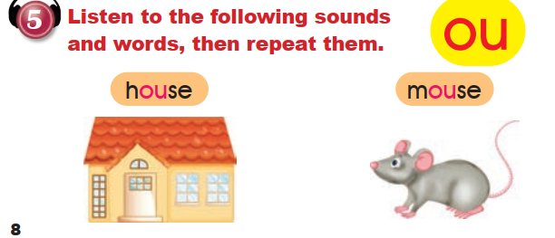

المفردات والشرح
كلمات الدرس ومعانيها العربية في جداول ثابتة للدراسة. الإنجليزية من الصور الست؛ الترجمات والشروح إضافات تعليمية وليست نص الكتاب.
1. المواد الدراسية
رموز دفتر التدريبات تُقرأ بالرجوع إلى صور المواد في كتاب التلميذ. لم تُضف مواد خارج الدرس.
| English | المعنى بالعربية | موضع الورود |
|---|---|---|
| Maths | الرياضيات | كتاب التلميذ 6–7؛ دفتر التدريبات 8 |
| Science | العلوم | كتاب التلميذ 6–7؛ دفتر التدريبات 6 و8 |
| Arabic | اللغة العربية | كتاب التلميذ 6–7؛ دفتر التدريبات 6–8 |
| English | اللغة الإنجليزية | كتاب التلميذ 6–7؛ دفتر التدريبات 6–8 |
| Social Studies | الدراسات الاجتماعية | كتاب التلميذ 6–7؛ دفتر التدريبات 6 و8 |
| Music | الموسيقى | كتاب التلميذ 6–7؛ دفتر التدريبات 6 و8 |
| Sports | التربية الرياضية / الرياضة | كتاب التلميذ 6–7؛ دفتر التدريبات 6 و8 |
| Art | التربية الفنية / الرسم | كتاب التلميذ 6–7؛ دفتر التدريبات 6–8 |
2. الأيام والوقت
| English | المعنى بالعربية | موضع الورود |
|---|---|---|
| Sunday | الأحد | دفتر التدريبات 8 |
| Monday | الاثنين | كتاب التلميذ 7؛ دفتر التدريبات 8 |
| Tuesday | الثلاثاء | كتاب التلميذ 6–7؛ دفتر التدريبات 6 و8 |
| Wednesday | الأربعاء | كتاب التلميذ 7 |
| Thursday | الخميس | كتاب التلميذ 7 |
| today | اليوم | كتاب التلميذ 6–7؛ دفتر التدريبات 6 |
| tomorrow | غدًا | كتاب التلميذ 6 |
3. الأعداد من 21 إلى 30
| English | المعنى بالعربية | موضع الورود |
|---|---|---|
| twenty-one · 21 | واحد وعشرون | كتاب التلميذ 8؛ دفتر التدريبات 7 |
| twenty-two · 22 | اثنان وعشرون | كتاب التلميذ 8؛ دفتر التدريبات 7 |
| twenty-three · 23 | ثلاثة وعشرون | كتاب التلميذ 8؛ دفتر التدريبات 7 |
| twenty-four · 24 | أربعة وعشرون | كتاب التلميذ 8؛ دفتر التدريبات 7 |
| twenty-five · 25 | خمسة وعشرون | كتاب التلميذ 8؛ دفتر التدريبات 7 |
| twenty-six · 26 | ستة وعشرون | كتاب التلميذ 8؛ دفتر التدريبات 7 |
| twenty-seven · 27 | سبعة وعشرون | كتاب التلميذ 8؛ دفتر التدريبات 7 |
| twenty-eight · 28 | ثمانية وعشرون | كتاب التلميذ 8؛ دفتر التدريبات 7 |
| twenty-nine · 29 | تسعة وعشرون | كتاب التلميذ 8؛ دفتر التدريبات 7 |
| thirty · 30 | ثلاثون | كتاب التلميذ 8؛ دفتر التدريبات 7 |
4. كلمات وعبارات من الدرس
| English | المعنى بالعربية | موضع الورود |
|---|---|---|
| school subjects | المواد الدراسية | عنوان الدرس |
| lesson | حصة / درس | كتاب التلميذ 6–7 |
| favourite | مفضّل | كتاب التلميذ 6–7؛ دفتر التدريبات 6 و8 |
| pupils | تلاميذ | كتاب التلميذ 6 |
| books | كتب | كتاب التلميذ 6 |
| open | افتحوا | كتاب التلميذ 6 |
| need | نحتاج إلى | كتاب التلميذ 6 |
| crayons | أقلام تلوين شمعية | كتاب التلميذ 6 |
| like | يُحبّ | كتاب التلميذ 6 |
| house | منزل | كتاب التلميذ 8 |
| mouse | فأر | كتاب التلميذ 8 |
5. عبارات من النص
الأمثلة الإنجليزية التالية منقولَة من المصدر؛ الترجمة العربية للتوضيح.
What lessons have we got today?
ما الحصص التي لدينا اليوم؟
Today we have got Science and Maths.
لدينا اليوم العلوم والرياضيات.
What’s your favourite lesson?
ما درسك المفضّل؟
My favourite lesson is Maths.
درسي المفضّل هو الرياضيات.
have got والاختصارات في النص
تعبّر have got هنا عن وجود الحصص أو امتلاكها. We’ve got اختصار We have got، وI’ve got اختصار I have got. وتُنفى بـ haven’t كما في إجابة المصدر:
Have we got Arabic today?
No, we haven’t. We’ve got Social Studies.
المعنى: هل لدينا العربية اليوم؟ لا، ليس لدينا. لدينا الدراسات الاجتماعية.
الصوت ou
يظهر الحرفان ou في house وmouse. يُنطقان في هاتين الكلمتين /aʊ/>. هذا شرح نطق إضافي؛ التسجيل الأصلي غير متوفر، ولا نعمّم هذا النطق على كل كلمة فيها ou.
